대표 음식 15종
사진은 Wikimedia Commons에 공개된 실제 촬영본이며, 저작자와 라이선스를 각 사진 아래에 적었습니다. 촬영한 식당·지역·조리법에 따라 실제 모습은 다를 수 있습니다. 맞는 사진을 아직 찾지 못한 3곳은 비워 두었습니다.
-
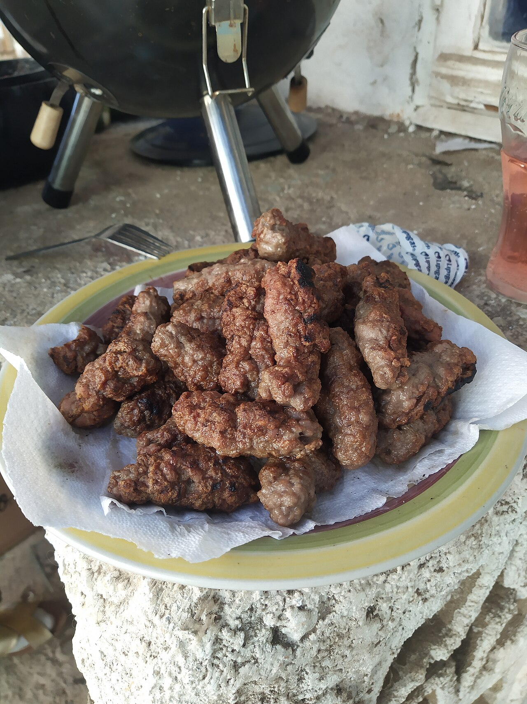
사진: Slovojed Silabski · CC BY-SA 4.0 · Wikimedia Commons 체바피Ćevapi
잘게 다진 고기를 작은 원통 형태로 구워 솜운(somun) 빵·양파와 함께 제공한다. 사라예보와 반야루카 등 지역별 모양과 양념 차이가 있다.
자세히 보기
-
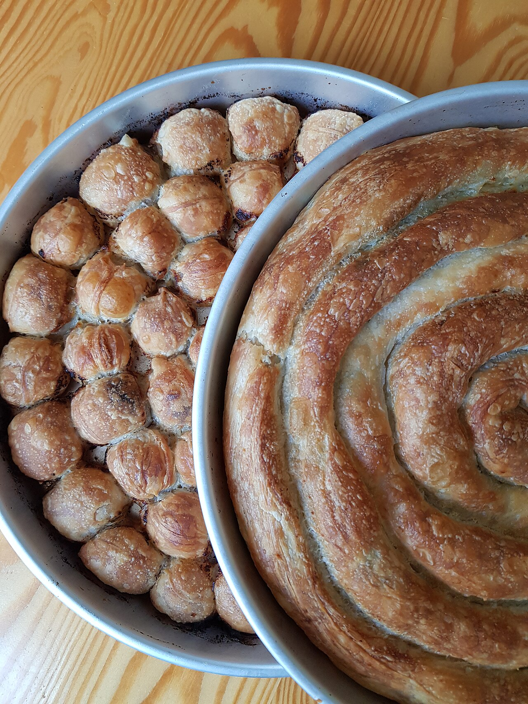
사진: BosnianGourmet · CC BY-SA 4.0 · Wikimedia Commons 부레크Burek
얇은 유프카 반죽에 고기 소를 넣어 말거나 겹겹이 굽는다. 보스니아에서는 고기 파이를 burek, 치즈 등 다른 속의 파이를 다른 명칭으로 구분하는 관습이 널리 알려져 있다.
자세히 보기
-
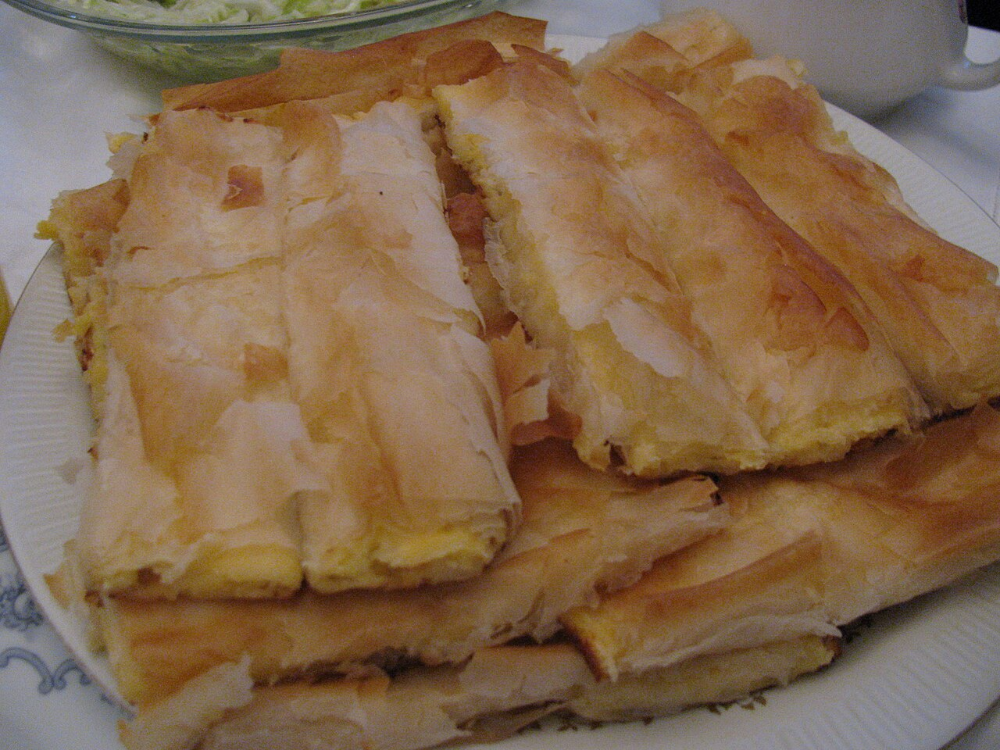
사진: BiHVolim · CC BY-SA 4.0 · Wikimedia Commons 시르니차Sirnica
치즈·유제품 소를 넣어 구운 파이. 부레크와 비슷하게 생겼지만 속 재료가 다르다.
자세히 보기
-
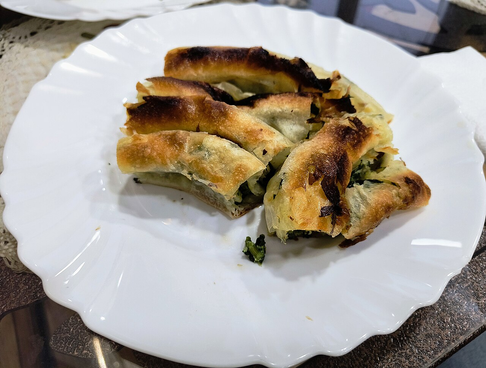
사진: Miomir Magdevski · CC BY-SA 4.0 · Wikimedia Commons 젤랴니차Zeljanica
시금치 등 잎채소와 치즈를 넣은 파이. 요거트나 발효 유제품과 함께 먹는 경우가 많다.
자세히 보기
-
사진 준비 중
맞는 사진을 구하는 대로 채웁니다. 다른 사진으로 대신하지 않습니다. 보산스키 로나츠Bosanski lonac
쇠고기·양고기와 감자·양배추·채소를 층층이 넣고 오래 끓이는 전통 냄비요리. 가정마다 조합이 다양하다.
자세히 보기
-
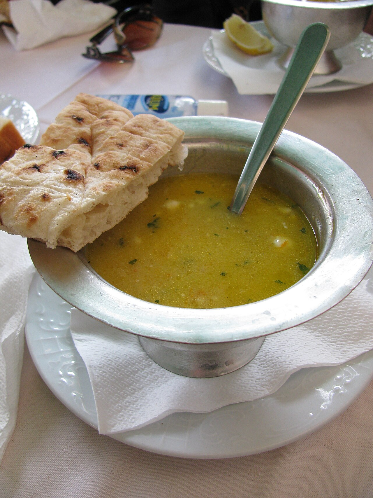
사진: BiHVolim · CC BY-SA 4.0 · Wikimedia Commons 베고바 초르바Begova čorba
닭고기·오크라·채소를 넣어 진하게 끓이는 수프. 명절·가정식·식당 메뉴에서 찾아볼 수 있다.
자세히 보기
-
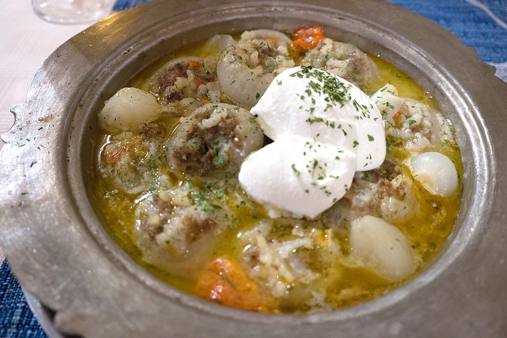
사진: Fanny Schertzer · CC BY-SA 3.0 · Wikimedia Commons 소간 돌마Sogan-dolma
양파 속에 다진 고기와 쌀을 채워 익히는 요리. 동오스만권에서 공유되는 돌마 문화의 현지 변형이다.
자세히 보기
-
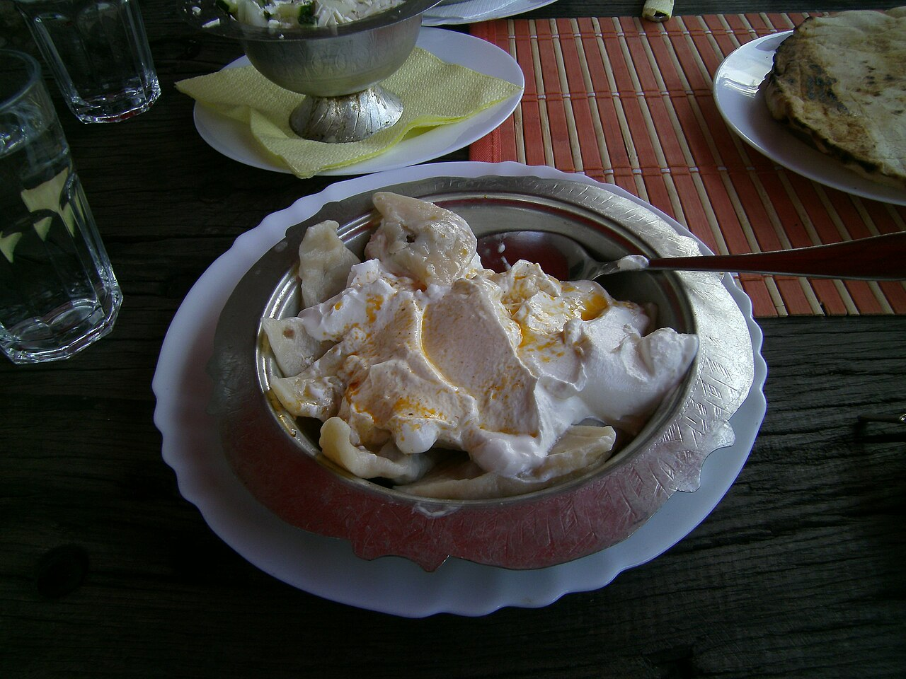
사진: amanderson2 · CC BY 2.0 · Wikimedia Commons 클레페Klepe
다진 고기 소를 넣어 삶는 반달 모양 만두. 마늘을 곁들인 발효 유제품 소스와 먹는 경우가 많다.
자세히 보기
-

사진: Tizilohja25 · CC BY-SA 4.0 · Wikimedia Commons 야프라크Japrak
포도잎 또는 다른 잎에 쌀과 고기를 싸서 끓인다. 오스만 및 발칸 지역 음식과 닮은 공유 전통이다.
자세히 보기
-
사진 준비 중
맞는 사진을 구하는 대로 채웁니다. 다른 사진으로 대신하지 않습니다. 트라브니크 치즈Travnički sir
중부 산악 지역의 염장·숙성 흰 치즈. 젖소·양젖 배합과 제조법은 생산자마다 다를 수 있다.
자세히 보기
-
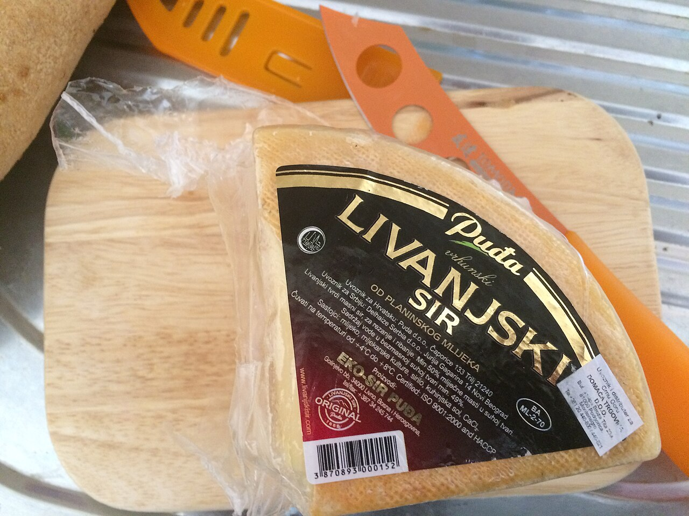
사진: Uniquenick · CC BY-SA 4.0 · Wikimedia Commons 리브노 치즈Livanjski sir
리브노 지역에서 생산되는 숙성 치즈. 지역 목축문화와 치즈 생산으로 알려져 있다.
자세히 보기
-
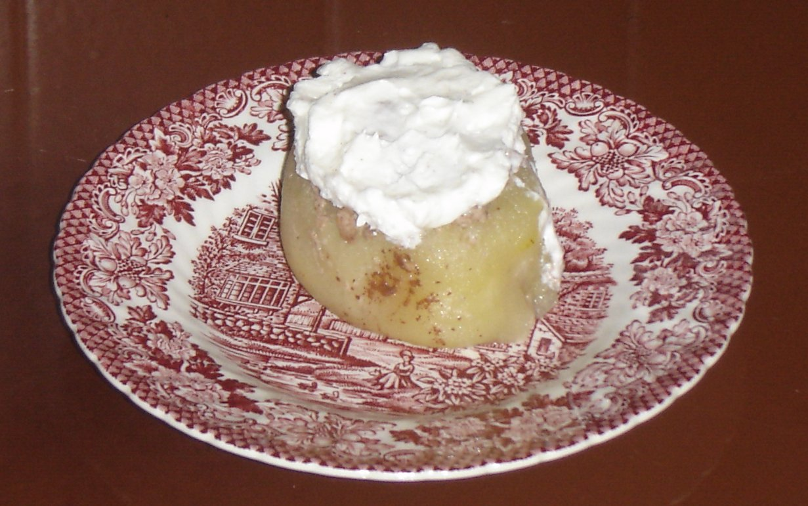
사진: 작성자 미상(Commons 파일 페이지 참고) · CC BY 2.5 · Wikimedia Commons 투파히야Tufahija
삶은 사과 속에 호두 등을 채우고 시럽·크림을 곁들이는 디저트. 오스만 제국권 도시 디저트와 연관된다.
자세히 보기
-
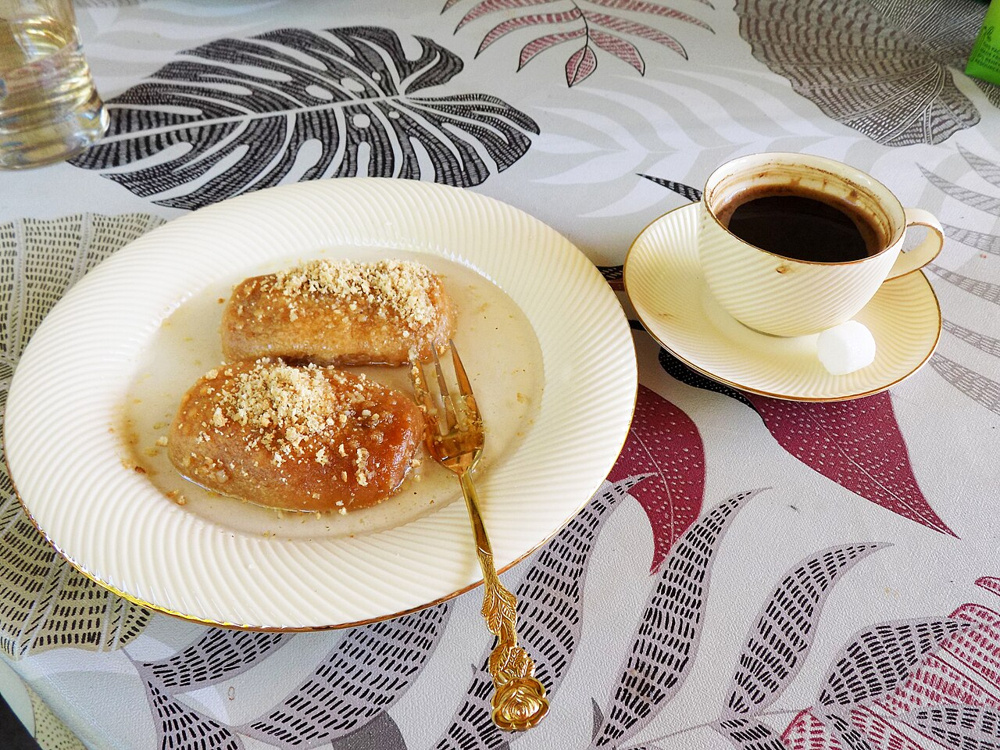
사진: Miomir Magdevski · CC BY-SA 4.0 · Wikimedia Commons 후르마시체Hurmašice
버터 반죽을 굽고 달콤한 시럽에 담그는 작은 과자. 커피와 즐기는 경우가 많다.
자세히 보기
-
사진 준비 중
맞는 사진을 구하는 대로 채웁니다. 다른 사진으로 대신하지 않습니다. 스모크바라Smokvara
헤르체고비나의 무화과 등을 활용한 달콤한 전통 과자·후식 명칭. 레시피가 다양한 지역 요리이다.
자세히 보기
-
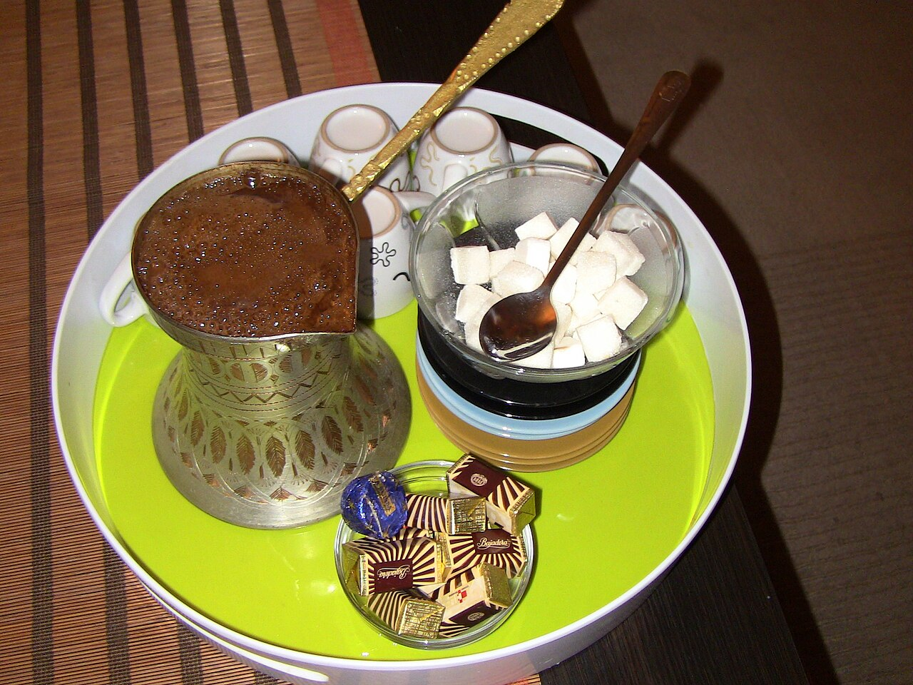
사진: BiHVolim · CC BY-SA 4.0 · Wikimedia Commons 보스니아 커피Bosanska kahva
작은 주전자( džezva )와 잔에서 천천히 나누는 커피 문화. 단순 음료가 아닌 방문·접대의 상징이라는 맥락이 중요하다.
자세히 보기
함께 알아두면 좋은 점
- 알레르기·식단: 성분과 조리법은 식당·가정마다 달라 일반화할 수 없습니다. 알레르기나 식단 제한이 있다면 주문 전에 직접 확인하세요.